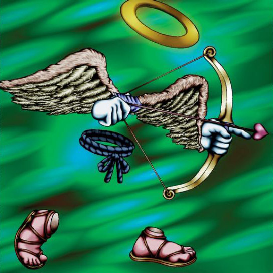

Skelengel

Description: "If a card has been played from the hand in the turn when this card is destroyed in battle, the owning player can play one more card from the hand."
STATS
ATK: 900
DEF: 400DECK COST
Deck Cost per Card: 18EFFECT NOT IMPLEMENTED
Fusion List (11 Possible Fusions)
- Skelengel + Dancing Elf = Dark Witch
- Skelengel + Fusionist = Garvas
- Skelengel + Gate Deeg = Garvas
- Skelengel + Goddess with the Third Eye = Dark Witch
- Skelengel + Key Mace = Dark Witch
- Skelengel + Little Chimera = Garvas
- Skelengel + Lunar Queen Elzaim = Dark Witch
- Skelengel + Milus Radiant = Garvas
- Skelengel + Princess of Tsurugi = Dark Witch
- Skelengel + Silver Fang = Garvas
- Skelengel + Spirit of the Harp = Dark Witch